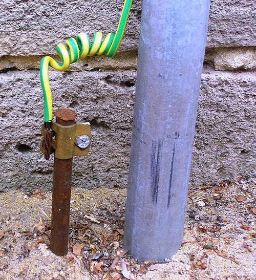

5. Tensió elèctrica¶
La tensió elèctrica d’un generador, també anomenada tensió elèctrica, és l’energia amb la qual el generador condueix electrons en un circuit elèctric.
Tots els circuits elèctrics necessiten almenys un generador que condueix els electrons a través del circuit. The generator acts as a water pump with electrons, forcing them to move through the electrical circuit.
Volts¶
La tensió elèctrica es mesura en ** volts **, abreujat amb la lletra [V]. A la taula següent apareixen al nostre entorn les tensions típiques de diversos generadors comuns:
| Generador | Tensió [V] |
|---|---|
| Bateria alcalina de tipus AA. | 1,5 volts |
| Pila de botons de liti. | 3 volts |
| Bateria d’un telèfon intel·ligent. | 3,6 volts |
| Connector USB | 5 volts |
| Carregador portàtil. | 20 volts |
| Pip de paret. | 230 volts |
| Línia de transport de tensió mitjana. | 22.000 volts |
Tensió terrestre¶
Es considera que la tensió de la terra (el terreny on som) val la pena zero volts i és la referència absoluta de qualsevol circuit elèctric. Una barra de coure d’un metre de longitud normalment es numera a terra, a la qual es connecta un cable amb colors grocs i verds.
{kind=link}

Posar a terra amb el vostre cable de color groc verd.¶
Des de la tensió terrestre, les tensions poden ser positives i negatives. En els circuits, el símbol de la Terra se sol dibuixar per indicar el que considerem tensió zero.
Al simulador següent podem observar diversos generadors de sèries que afegeixen les seves tensions. El color verd indica tensions positives i el color vermell indica tensions negatives. El símbol de la Terra indica una tensió zero absoluta.
Voltímetre¶
El ** Voltímetre ** és un dispositiu que mesura la diferència de tensió entre dos punts d’un circuit. El voltímetre sempre es connecta en paral·lel amb els elements que volem mesurar.
Per simular un voltímetre, hem de triar -lo entre `` dibuixar `` ...
A la següent simulació, afegiu els voltímetres necessaris per mesurar la tensió de les dues bateries juntes (V1 més V2), la tensió de la làmpada L1 i la tensió de la làmpada L2.
Exercicis¶
- Què és la tensió elèctrica o la tensió?
- Per què tots els circuits elèctrics necessiten almenys un generador elèctric?
- Quina tensió de volts té bateries i bateries típiques?
- Què és la tensió de la Terra?
- Què és un voltímetre? Com s’ha de connectar per mesurar la tensió?